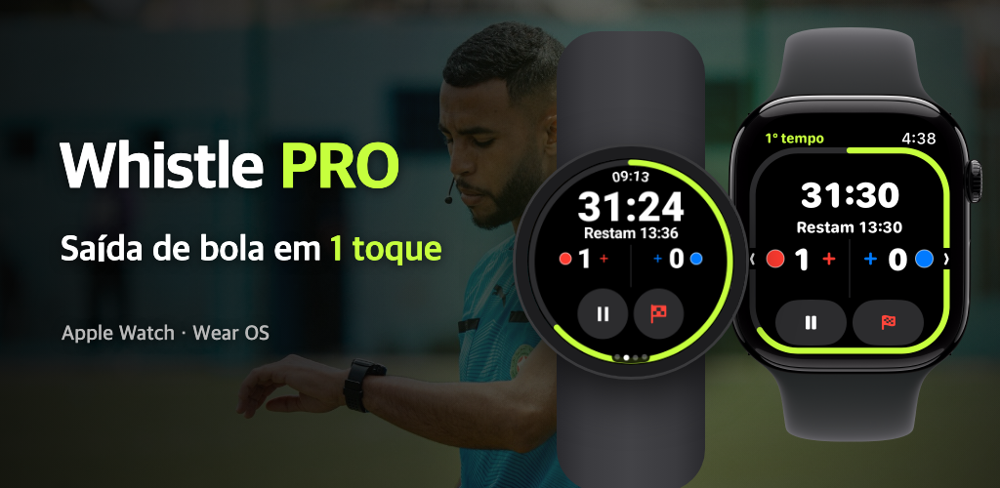

Whistle PRO
Coloque o relógio e entre em campo.
Cronômetro e registro de partidas para Apple Watch e Wear OS, feito para árbitros de futebol.
Baixar na App Store
Google Play em breve

Coloque o relógio e entre em campo.
Cronômetro e registro de partidas para Apple Watch e Wear OS, feito para árbitros de futebol.

Várzea, clubes e categorias de base. A partida inteira roda em um só relógio, sem celular.
Pause e retome, marque gol ou desfaça com os botões, a coroa ou o aro do relógio enquanto corre (PRO). No Apple Watch e em relógios Wear OS como o Galaxy Watch.
Dois tempos, quartos, prorrogação e pênaltis. A paralisação é cronometrada à parte para sugerir os acréscimos.
O pulso vibra pouco antes do fim, no fim do intervalo e quando um jogador com expulsão temporária pode voltar.
Registre gols, amarelos, expulsões e substituições com time e número. O segundo amarelo vira expulsão automaticamente.
Parta do padrão FIFA, mude duração, número de jogadores, limite de substituições e expulsão temporária e salve como predefinição.
Frequência cardíaca, distância, piques e mapa de calor ficam junto com o registro da partida e são salvos como treino no app Saúde (iPhone) ou no Health Connect (Android).
Ao fim da partida, compartilhe pelo celular uma súmula com gols, cartões, substituições e as regras aplicadas.
Na aba [Mapa] dos detalhes da partida, alinhe os quatro cantos do campo para ver seu mapa de calor sobre uma foto de satélite.
Nas partidas com o campo alinhado, transforme sua movimentação em um vídeo de replay de 15 segundos e poste direto nas redes sociais.
Escolha no relógio as cores dos uniformes dos dois times antes da saída de bola e corrija no celular depois da partida.
O essencial para comandar a partida é grátis; registros e análises ficam no PRO.
Sem assinatura
Mensal ou anual · 7 dias de teste grátis
Assine no app do celular e cancele quando quiser nas configurações da sua conta da App Store ou do Google Play.
Sem conta e sem servidor. Os registros das partidas e os dados de saúde circulam só entre o seu relógio e o seu celular.
Ver a Política de Privacidade